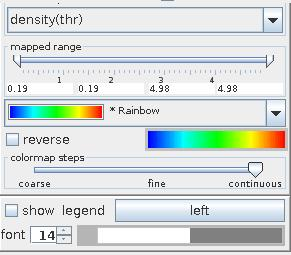

|
|
|
COLORMAPPING PANEL
Colormapping panel is responsible for choosing what data component and how, is transformed into colour representation.

Color component drop down list defines the component delivered with the input field which is used to color the VNGeometryObject at output. By default the first component in the list is used. null uses gray shade.
The mapped range slider allows the user to cut the range of the color component from below and above. Values below or above the range are colored as the minimum or maximum range value, respectively. By default the whole range is used.
The color map drop down list enables the user to choose between the color maps defined in VisNow main Colormap Library available in the main manu through Colormap Editor. The default color map is Rainbow.
For the colormaps other than bi- and tricolor, the user can reverse the maps by choosing the reverse check box.
Bicolor and tricolor maps allow the user to build his or her own colormap by assigning two or three colors, respectively. In this case there appear two or three boxes below the drop down list. Mouse click on a box raises a color panel from which we can chose the desired color by a next mouse click. Doing so the first time we also have to change brightness by mouse dragging on the box into the right direction since by default the light is switched off.
The colormap steps slider adjusts the quality of interpolation between two fixed colors ranging from coarse (step function with few values) over fine (step function with tens values) to continuous (continuous function). Default quality is continuous.
If color component is null rather than colormap drop down list, reverse check box and colormap steps slider there appears a box for choosing color and brightness as described above.
Select the show legend check box to show the color legend in the viewer window. On the right hand side of the check box click the button to choose left, bottom, right or top position of the legend. Below choose font size of text and numbers in the font combo box and their color by raising the color panel mouse clicking on the color box and choosing the color by a next mouse click, and dragging the mouse on the color box for brightness.